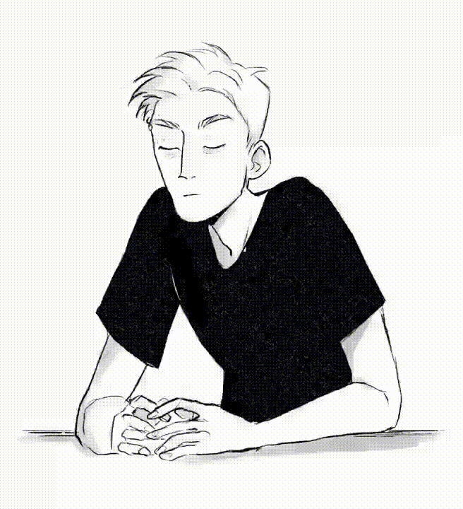

Эта страница создана для ознакомления с моим профилем

Имя: Лотарева Мария Алексеевна
Дата рождения: 07.08.1999
Образование: Бакалавр (педагог с двумя профилями : "Французский язык, английский язык")
Родной город: Волгоградская обл, г. Урюпинск
Дополнительные навыки и умения: владение графическими редакторами Adobe Photoshop, SAI, CSP, Procreate на продвинутом уровне, базовые знания Adobe After Effects и Adobe Premier.
Личные качества:быстрая обучаемость, высокая стрессоустойчивость, знание иностранных языков (французский язык, английский язык), коммуникабельность, ответственность и оперативность.